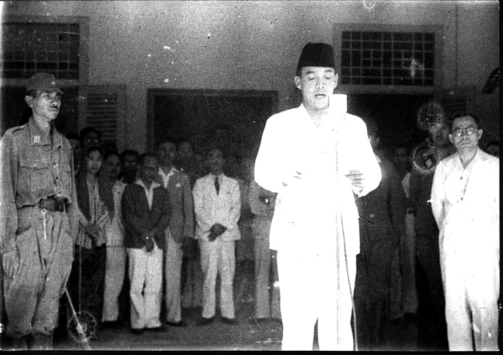

The Time of Independence
What you need to know
Back

After World War II ended, Indonesian nationalists declared independence on 17 August 1945, and the government of
Jakarta City was changed into the Jakarta National Administration in the following month. During the Indonesian
National Revolution, Indonesian republicans withdrew from Allied-occupied Jakarta and established their capital in
Yogyakarta.
After securing full independence, Jakarta again became the national capital in 1950. With Jakarta selected to
host the 1962 Asian Games, Sukarno, envisaging Jakarta as a great international city, instigated large
government-funded projects with openly nationalistic and modernist architecture. Projects included a cloverleaf
interchange, a major boulevard (Jalan MH Thamrin-Sudirman), monuments such as The National Monument, Hotel
Indonesia, a shopping centre, and a new building intended to be the headquarters of CONEFO. In October 1965, Jakarta
was the site of an abortive coup attempt in which six top generals were killed, precipitating a violent
anti-communist purge which killed at least 500,000 people, including some ethnic Chinese. The event marked the
beginning of Suharto's New Order. The first government was led by a mayor until the end of 1960 when the office was
changed to that of a governor. The last mayor of Jakarta was Soediro until he was replaced by Soemarno Sosroatmodjo
as governor.
In 1966, Jakarta was declared a 'special capital region' (Daerah Khusus Ibukota), with a status equivalent to that
of a province separated from West Java. Based on law No. 5 of 1974 relating to regional governments, the Jakarta
Special Capital Region was confirmed as the capital of Indonesia and one of the country's then 26 provinces.
Lieutenant General Ali Sadikin served as governor from 1966 to 1977; he rehabilitated roads and bridges, encouraged
the arts, and built hospitals and a large number of schools. He cleared out slum dwellers for new development
projects — some for the benefit of the Suharto family,— and attempted to eliminate rickshaws and ban street
vendors. He began control of migration to the city to stem overcrowding and poverty. Foreign investment
contributed to a real estate boom that transformed the face of Jakarta. The boom ended with the 1997 Asian
financial crisis, putting Jakarta at the centre of violence, protest, and political manoeuvring.
After three decades in power, support for President Suharto began to wane. Tensions peaked when four students were
shot dead at Trisakti University by security forces. Four days of riots and violence in 1998 ensued that killed an
estimated 1,200, and destroyed or damaged 6,000 buildings, forcing Suharto to resign. Much of the rioting
targeted Chinese Indonesians. In the post-Suharto era, Jakarta has remained the focal point of democratic change
in Indonesia. Jemaah Islamiyah-connected bombings occurred almost annually in the city between 2000 and
2005, with another in 2009. In August 2007, Jakarta held its first-ever election to choose a governor as
part of a nationwide decentralisation program that allows direct local elections in several areas. Previously,
governors were elected by the city's legislative body.
During the Jokowi presidency, the Government adopted a plan to move Indonesia's capital to Nusantara after 17 August
2024, but this has not occurred due to delays.
Between 2016 and 2017, a series of terrorist attacks rocked Jakarta with scenes of multiple suicide bombings and
gunfire. Abu Bakr al-Baghdadi claimed responsibility for the attacks on behalf of Islamic State.